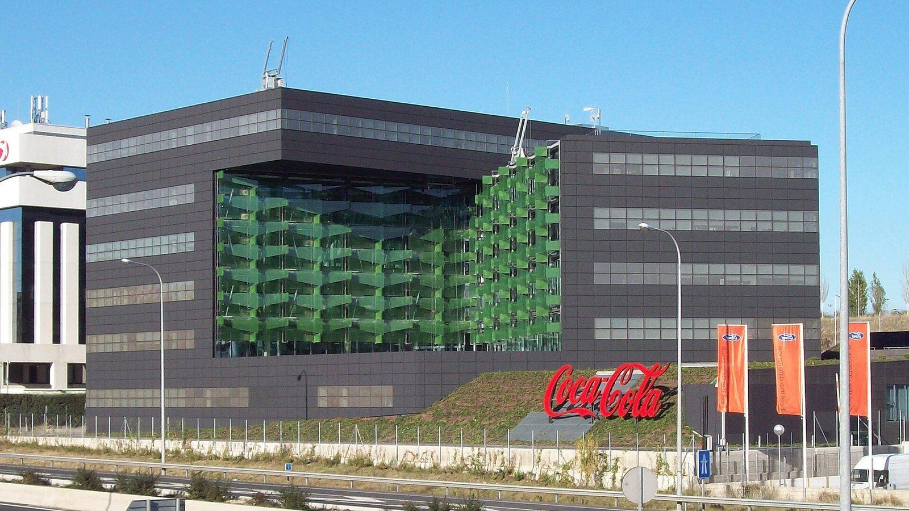
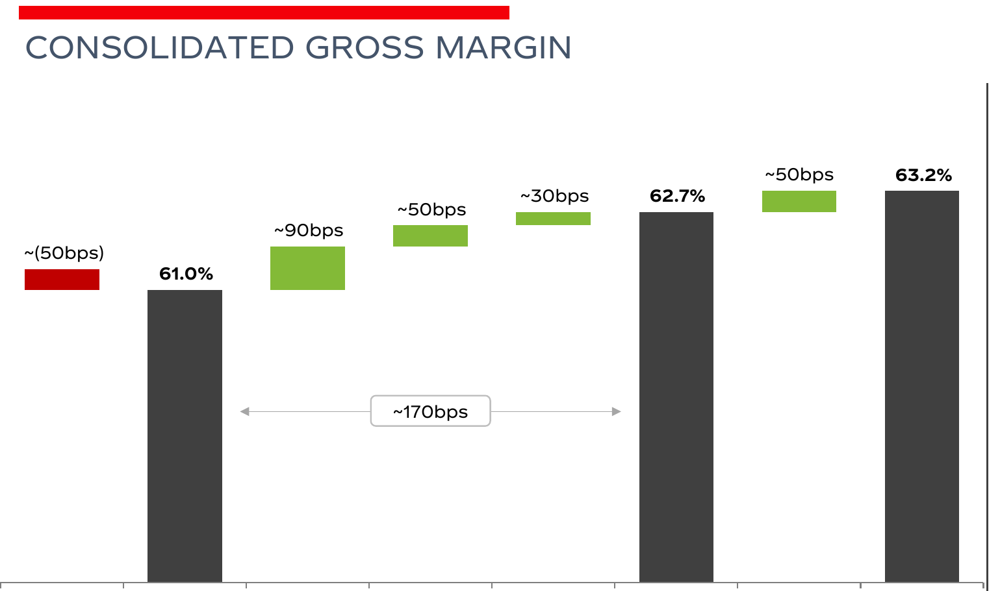
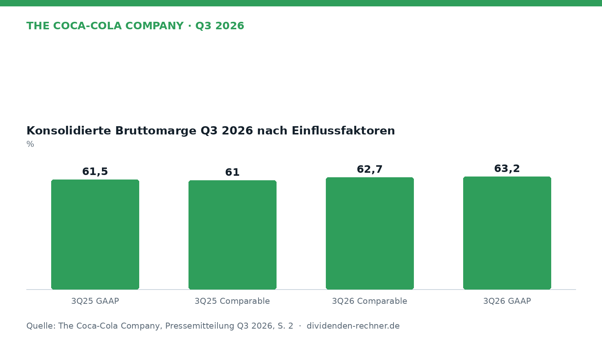

Quartalszahlen

The Coca-Cola Company: Margenanalyse im dritten Quartal 2026
Coca-Cola legt die Margenanalyse für das dritte Quartal 2026 vor. Die Bruttomarge nach GAAP steigt im Jahresvergleich.

The Coca-Cola Company hat die Margenanalyse für das dritte Quartal 2026 vorgelegt und zeigt dabei Zuwächse bei den Brutto- und operativen Margen im Jahresvergleich. Die Berichtsperiode endete am 2. Oktober 2026, während das Vergleichsquartal des Vorjahres am 26. September 2025 endete. Der Bericht beleuchtet die Entwicklung der Kennzahlen sowohl auf Basis der Rechnungslegung nach GAAP als auch unter Berücksichtigung bereinigter Non-GAAP-Maßstäbe. ## Entwicklung im dritten Quartal Im dritten Quartal 2026 verzeichnete der Konzern eine nach GAAP berichtete Bruttomarge von 63,15%, verglichen mit 61,49% im entsprechenden Vorjahreszeitraum. Die bereinigte vergleichbare Bruttomarge (Non-GAAP) lag bei 62,69%, nach 61,03% im Vorjahr. Wie die Waterfall-Grafik zur Bruttomarge verdeutlicht, trugen organisches Umsatzwachstum sowie Währungseffekte und Portfoliobereinigungen zu dieser Entwicklung bei, während bestimmte Posten zur Vergleichbarkeit bereinigt wurden.

Konzerngrossmarge Q3 2026 im Vorjahresvergleich. Quelle: The Coca-Cola Company, Quartalszahlen Q3 2026 vom 2026-10-27, S. 2. Ausschnitt nur zugeschnitten, sonst unverändert. Die operativen Margen entwickelten sich ebenfalls positiv. Die GAAP-basierte operative Marge belief sich im Berichtszeitraum auf 33,37%, während im dritten Quartal 2025 noch 31,97% ausgewiesen wurden. Die vergleichbare operative Marge (Non-GAAP) erreichte 32,93% im Vergleich zu 31,87% im Vorjahresquartal. ## Neunmonatsverlauf und Details Betrachtet man die ersten neun Monate des Geschäftsjahres 2026 bis zum 2. Oktober 2026, so lag die reported Bruttomarge bei 63,00% nach 62,14% in den ersten neun Monaten des Jahres 2025. Die GAAP-operative Marge für den Neunmonatszeitraum stieg auf 34,40% gegenüber 33,01% im Vorjahr. Die Bereinigungen beinhalten unter anderem Effekte aus wirtschaftlichen Sicherungsgeschäften sowie Portfolioveränderungen wie den Verkauf des operativen Geschäfts mit Fertigprodukten in Nigeria. ## Ausblick und offene Punkte Der Konzern führt die Margenexpansion im Wesentlichen auf organisches Umsatzwachstum zurück, das teilweise durch gestiegene Inputkosten und höhere Aufwendungen für Marketing sowie operative Ausgaben ausgeglichen wurde. Währungsschwankungen und makroökonomische Faktoren bleiben asymmetrische Risikofaktoren für die künftige Ergebnisentwicklung. Das Unternehmen steuert diesen Einflüssen unter anderem durch Absicherungsstrategien entgegen, deren Effekte in den Überleitungen gesondert ausgewiesen werden.
Eigene Darstellung nach Daten aus: The Coca-Cola Company, Quartalszahlen Q3 2026 vom 2026-10-27.Quelle: The Coca-Cola Company, Quartalszahlen Q3 2026 vom 2026-10-27. Rechenwege eigene Berechnung. Keine Anlageberatung.
Hinweis: Dieser Text dient der allgemeinen Information und ist weder Anlage-, Steuer- noch Rechtsberatung. Kapitalanlagen sind mit Risiken verbunden, bis hin zum Totalverlust.